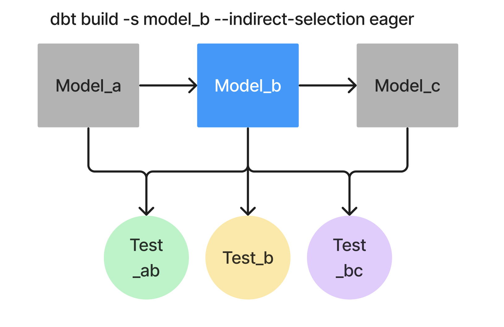

run, build, and test
You’ve used dbt run, dbt build, dbt test, dbt seed, dbt snapshot, dbt deps, dbt docs generate, dbt show, and dbt debug across Stages 1–6. That’s most of the workhorse commands. This lesson covers the rest — the ones you’ll reach for less often but should know exist.
The most-used commands. For reference:
| Command | What it does |
|---|---|
dbt run |
Runs models — issues create or replace SQL against the warehouse. |
dbt test |
Runs tests against materialized models. |
dbt build |
Combines seed + run + snapshot + test in DAG order. The production-grade refresh. |
You’ll use build 90% of the time once tests are wired up. run and test separately are useful during development for tighter feedback loops.
These don’t change the warehouse — they just inspect the project:
| Command | What it does |
|---|---|
dbt parse |
Parses every model/test/macro/snapshot/exposure file and produces target/manifest.json. Doesn’t run anything against the warehouse. Use for fast YAML/Jinja syntax checks before a full build. |
dbt ls |
Lists nodes in the project. dbt ls --resource-type model for just models, --select staging to scope, etc. Quickest way to confirm what’s in the project after a structural change. |
dbt show --select <model> --limit N |
Run a model’s compiled SQL as a query, return N rows, print as a table. Stage 6’s exercise just covered this. |
dbt compile --select <name> |
Render Jinja for a model/analysis/test, write the resulting SQL to target/compiled/<...>.sql. Doesn’t execute. (Stage 3’s analyses_intro used this.) |
dbt debug |
Tests the warehouse connection and prints the dbt + adapter versions. First thing to run when “something’s wrong with my setup.” (Stage 1’s profiles_yml used this.) |
For when things go wrong or you want a fresh start:
| Command | What it does |
|---|---|
dbt clean |
Removes target/ and dbt_packages/. Like a hard reset of dbt state. After running it, you need dbt deps to reinstall packages and any subsequent command to rebuild target/. |
dbt retry |
Resumes the most recent dbt build from the point where it failed. dbt reads target/run_results.json for the previous run, finds the failed nodes, and re-runs those + their downstream. Skips the nodes that already succeeded. Saves real time on big projects when CI catches a failure 50 nodes in. |
dbt run --full-refresh |
Forces incremental models to rebuild from scratch (drop + recreate). Useful after schema changes that incremental’s append/merge logic can’t handle. |
| Command | What it does |
|---|---|
dbt source freshness |
For each source declared with a loaded_at_field and freshness: thresholds, runs select max(loaded_at_field) from <source_table> and compares to the thresholds. If beyond error_after, the source is “stale” and dbt errors out. Run this first in a CI job to fail fast on bad upstream data. |
The seed CSVs in this project don’t have a useful timestamp column, so we don’t have a freshness exercise. In production, every source you genuinely care about should declare freshness.
| Command | What it does |
|---|---|
dbt run-operation <macro_name> |
Calls a macro outside the context of a model run. Useful for one-off operations: dbt run-operation grant_select --args '{role: bi_user, schema: marts}' to issue a grant select SQL statement, or dbt run-operation create_external_table to provision warehouse infrastructure. |
The run-operation mechanism is how you go beyond “dbt as a transformation tool” toward “dbt as a deployment / DDL tool.”
| Command | What it does |
|---|---|
dbt init <project_name> |
Scaffolds a new dbt project — creates dbt_project.yml, models/, seeds/, etc. (Stage 1’s dbt_init exercise.) Idempotent: re-running on an existing project just confirms the structure. |
You’ll run this once per project, then never again.
| Command | What it does |
|---|---|
dbt docs generate |
Builds target/manifest.json + target/catalog.json. (Stage 2’s dbt_docs exercise.) |
dbt docs serve |
Starts a local web server that renders the docs site. Open in browser to see the lineage graph + descriptions. The site reads manifest.json and catalog.json directly. |
A pragmatic cheat sheet of what to run when:
First-time setup → dbt init, dbt deps, dbt debug
Daily dev cycle → dbt build (or dbt run + dbt test as separate)
Iterating on one model → dbt run --select <model>, then dbt show
Confirming structure → dbt ls
Fast syntax check → dbt parse
Updating dependencies → dbt deps
After a failed build → dbt retry (skip the work that already succeeded)
Full reset → dbt clean && dbt deps && dbt build
Production deploy → dbt source freshness && dbt build --select state:modified+ --state ./prev_target
Documentation refresh → dbt docs generate (then deploy the target/ dir to a static site)
Custom DDL / grants → dbt run-operation <macro>
dbt clean and forgetting dbt deps afterward. clean wipes dbt_packages/. The next command that needs a package macro will fail until you re-install.dbt build when a tighter scope would be faster. A 500-model project takes minutes for full dbt build. If you only changed one model, dbt build --select <model>+ is much faster (and matches what production CI does).dbt parse exists. It’s the fastest sanity check after a YAML edit. dbt run parses + runs — slower than necessary if you just want to check the YAML compiles.dbt show and dbt compile. compile writes the rendered SQL to a file; show runs it and prints rows. Different tools for different needs.The exercise for this lesson — target_directory_tour — has you inspect the artifacts dbt produces under target/ so you know what to look at when these commands behave unexpectedly.
Press n to start the exercise.